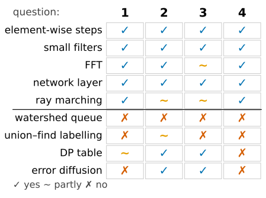
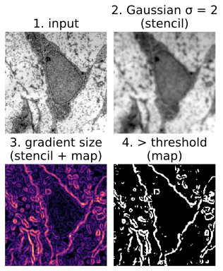
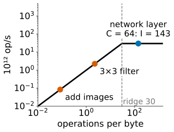
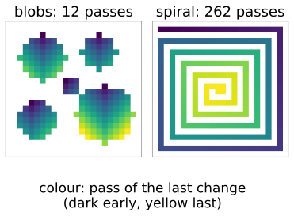
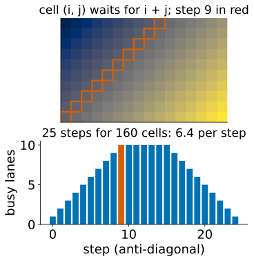
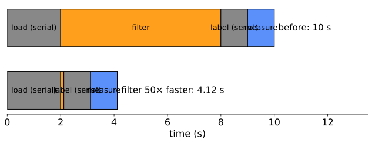
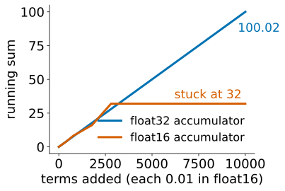

Are there many independent outputs, at least 10^5–10^6? (unit 1: occupancy)
Do neighbouring threads do the same thing? (unit 1: divergence)
Is memory access regular: coalesced, with reuse? (unit 2)
Is there no global order: no output waits for an unknown other output? (unit 3: depth)
And (5): does the work justify the transfer to the GPU and back, or does the data stay there? (unit 2)

Good: maps, filters and the FFT
Element-wise steps and short fused pipelines (map): trivially parallel, bandwidth-bound; fuse them.
Filters and morphology with small kernels (stencil): tiles and halos; separable filters; very large kernels through the FFT.
FFT (regular butterflies, \log_2 n passes): registration, deconvolution, large convolutions.
Per-pixel statistics: local means and variances, local thresholds (stencils of box filters).
Distance transforms done separably: the exact Euclidean distance transform runs row by row, then column by column (morphology); each row is independent.
All are maps or stencils, with coherent warps and coalesced reads.

Micrograph: transmission electron micrograph of a mesenchymal stem cell, Robert M. Hunt, CC BY 3.0, via Wikimedia Commons.
Good: neural networks
A convolutional layer applies a bank of kernels to all pixels and all channels (convolutional networks): it can be written as one large matrix product.
A 3 × 3 layer with C = 64 input and output channels on a 256 × 256 image: 4.8 \cdot 10^9 operations on 34 MB: intensity \approx 9C/4 = 143. Far right of the ridge: compute-bound, the one common image workload that uses the GPU’s full arithmetic.
Training uses batches of images: more columns in the matrix product, more reuse of the weights.
This is why deep learning and GPUs grew up together: from 2012 on, networks trained on GPUs started winning image recognition contests.

Good: ray marching and volume rendering
One ray per output pixel through the volume (volume rendering): independent, identical, coherent between neighbouring pixels.
The texture cache gives trilinear interpolation for free (GPU textures).
But early ray termination stops rays at different steps: a warp marches until its slowest ray is done (divergence, unit 1). Renderers march in compact tiles and skip empty space in bricks.
Hardware ray tracing adds units that walk acceleration structures (trees of bounding boxes); the ray-tracing day covers them.
Bad: priority-queue flooding
Watershed by flooding (watershed): a queue always serves the lowest unlabelled pixel next, and each pixel’s label comes from its already-labelled neighbours.
The queue imposes a global order: one pixel at a time, depth = number of pixels.
Workaround: level-synchronous flooding: process all pixels of one grey level together, in rounds (parallel within a level, many passes).
Price: the labels can differ from the sequential result on plateaus and ties.
Demo below: 576 pixels, 573 queue steps against 22 level-synchronous steps, the same label for 569 of 576 pixels.
Bad: union–find labelling
Two-pass labelling with union–find (labelling) scans the image in raster order and follows parent pointers: sequential, with random memory access.
Label propagation: every foreground pixel takes the smallest label among itself and its neighbours; repeat until nothing changes. Each pass is a stencil, fully parallel.
Price: the number of passes = the longest path inside an object from its smallest label. A blob: a dozen passes. A spiral or a long snake: hundreds or thousands, each a full pass over the image.
Pointer jumping: after each pass, every pixel replaces its label by its label’s label (a jump along the chain). Chains shrink much faster.
Real GPU labelling codes are hybrids: label tiles in fast memory, then merge across tile borders.

Try it: labelling in parallel
The math: passes of label propagation
One pass moves the minimum label one pixel further (to every neighbour at once). Let p_0 be the pixel with the smallest label of a component K and d_K(p_0, p) the geodesic distance inside K (shortest path through the component). Then
A straight bar of length \ell, minimum at one end: \ell - 1 passes; minimum in the middle: \lceil(\ell-1)/2\rceil.
A spiral filling an n\times n image has a path length of order n^2/2: O(n^2) passes of O(n^2) work each.
Pointer jumping on a chain: each jump replaces “my parent” by “my parent’s parent”, halving the distance to the root: \lceil\log_2 \ell\rceil jumps for a chain of length \ell.
Bad: max-flow and dynamic programming
Max-flow (graph cuts): augmenting paths are found one after another, each depending on the flows left by the previous ones. Push–relabel is local (each node pushes excess flow to its neighbours) and parallel per node, but irregular and needs many global passes.
Dynamic programming (DP paths): cell (i, j) needs (i-1, j), (i, j-1) and (i-1, j-1). Only cells on one anti-diagonal are independent: a wavefront of n + m - 1 steps that starts with one cell, grows to \min(n, m), and shrinks to one again.
Both have work to spare but a long chain of dependent steps: depth, not work, is the limit.

Try it: the DP wavefront
The math: the DP wavefront
Cells with i + j = d depend only on cells with i + j = d - 1 or d - 2. So the table can be filled in n + m - 1 parallel steps (depth), one anti-diagonal per step.
Step d has \min(d + 1,\ n,\ m,\ n + m - 1 - d) cells.
Average parallelism: \dfrac{nm}{n + m - 1}; for a square table \dfrac{n^2}{2n - 1} \approx \dfrac{n}{2}.
A 1000 \times 1000 table: 1999 steps of on average 500 cells: a GPU with 10 000 lanes is never more than a tenth busy, and pays a barrier per step.
Bad: recursions and small problems
Raster-scan recursions: the chamfer distance transform (each pixel from its already-updated neighbours), recursive (IIR) filters, error-diffusion dithering (quantisation: each pixel’s rounding error is pushed to the next pixels). Each output needs the previous one: depth = number of pixels per row or image.
Small problems: a 256 × 256 image has 65 536 pixels, too few to fill the GPU, too cheap to pay for transfer and launches. Many small images: batch them into one launch.
Sorting- and tree-heavy steps (k-d trees, region adjacency graphs, merging regions one by one): irregular memory, variable work per element.
“A GPU makes a parallel algorithm fast; it does not make a sequential algorithm parallel.” Making it parallel is an algorithm change, with its own trade-offs.
Amdahl’s law

A pipeline: load 2 s (sequential), filter 6 s, label 1 s (sequential union–find), measure 1 s. Make the filter 50 times faster on a GPU: 10 s → 4.12 s, 2.4 times faster. Even an infinitely fast GPU for everything except loading leaves 2 s: at most 5 times.
If a fraction s of the time stays sequential, the whole can never be more than 1/s times faster. Measure where the time goes before moving anything.
The math: Amdahl’s law
Serial fraction s, the rest sped up k times: S(k) = \frac{1}{s + (1-s)/k} \;\le\; \frac{1}{s}, \qquad \lim_{k\to\infty} S = \frac{1}{s}.
s = 0.1: S(50) = 8.5, never more than 10.
Transfers count as serial time: they add to s.
Gustafson’s view: with a faster machine people process bigger images; the parallel part grows with the problem and the serial part often does not, so the achievable speed-up grows with the problem size.
Precision on GPUs
Recall the floating-point formats: float32 (24 significant bits), float16 (11 bits, largest 65 504), bfloat16 (8 bits, the range of float32).
float32 is the default. float64 runs on many desktop GPUs at only 1/32–1/64 of the float32 rate (data-centre GPUs: 1/2). Fix cancellation and summation problems with better algorithms first (shift by the mean, pairwise sums).
float16 / bfloat16 halve the bytes: the roofline point moves right, memory-bound steps run twice as fast.
Matrix units (“tensor cores” in one vendor’s words) multiply small blocks of low-precision matrices at 8–16 times the float32 rate. Mixed precision: multiply in 16 bits, accumulate in float32 (a float16 sum of small values gets stuck).
8-bit integers with a scale per channel for running trained networks (the course’s own network weights are stored this way).
Images: a 12–16-bit raw image in float16 loses its low bits, and 65 535 overflows. Keep raw data in uint16 or float32; float16 is fine for normalised intermediate images and network activations.
The math: mixed-precision dot products
A dot product of length K (one output of a matrix product), unit roundoff u (u_{16} = 2^{-11}, u_{32} = 2^{-24}):
Products and sums in float16: error up to about K\,u_{16}\sum|a_ib_i|; and once the sum s is large, adding a term smaller than half the spacing of s changes nothing: the sum stalls (bit-depth day: 0.015-sized pixel values stall at 64 in float16).
Products rounded to float16 (or exact in the matrix unit), sums in float32: the summation error drops to K\,u_{32}, and stalling happens only 2^{13} times later.
Example: 10 000 terms of 0.01: float16 throughout gives 32; float16 values with float32 accumulation give 100.02 (0.01 is stored as 0.010002).

Try it: a network layer under three roofs
Summary
Four questions: many independent outputs? the same work in neighbouring threads? regular memory access? no global order? (and: worth the transfer?)
Good: element-wise steps, filters, separable transforms, the FFT, neural networks (compute-bound matrix products), ray marching.
Bad: methods with a global order or long dependency chains: priority-queue flooding, union–find, max-flow, dynamic programming, raster-scan recursions; and small problems. Parallel versions exist, at the price of more passes or different results.
Amdahl: a serial fraction s caps the speed-up at 1/s.
Precision: float32 by default; float16/bfloat16 and matrix units for networks, with float32 accumulation; keep raw high-bit-depth data out of float16.